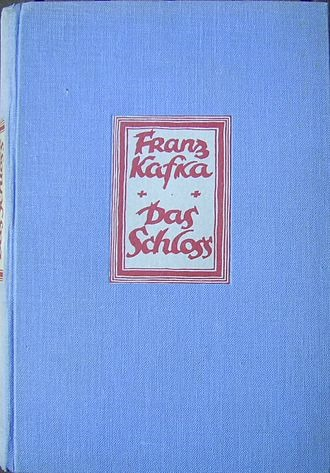
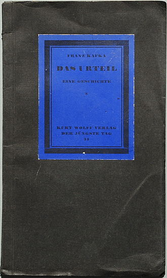

Book Review
Letter to His Father by Franz Kafka
 |
This is a letter from Franz Kafka to his father, Hermann Kafka. Frankz Kafka is known as one of the most influential writers of the 20th century, with eerie books such as The Trial, The Castle, and Metamorphosis.
In a letter directed to his father, he confesses the deep shame and alienation developed during his childhood. That is still ingrained in Franz despite maturing into adulthood. Kafka’s upbringing was troublesome, to say the least. He felt a substantial burden placed upon him by his father, a man that was always intellectually and physically stronger than him, towering over Franz as a predator gazes upon its prey. None of Franz’s choices made either in his professional career or in his romantic life seemed to impress the family’s overseer. Franz Kafka acknowledges that his father was a decent man and maybe would have even been friends with him in another life if he was not the son of immense Hermann Kafka. Kafka, the name that he never truly filled with pride and respect, almost always sick and too weak to put the vigor his father expected from someone carrying his name.
I found that reading this letter was the rawest insight into the mind of one of the greatest writers, which made me realize that the stories, such as The Trial and The Castle, were written from a place of pain and alienation, where he is the protagonist of the story. He is Mr.K, a man that has been put on trial where he never comes to know the crime he is being persecuted for, nor the nature of the judicial procedures taking place. Kafka wrote about how it felt to be an inadequate tiny human in an unforgiving absurd world that gives you nothing but existential anxiety and a life full of torment. It is haunting reading the words of a dead man that did not desire great riches and luxury. He wanted nothing more from life than to be accepted by his father and live his days peacefully without the demons that came from within. Instead, he was faced with a cruel life cut short by tuberculosis.
This point is illustrated in the following quote:
“… it is, after all, not necessary to fly right into the middle of the sun, but it is necessary to crawl to a clean little spot on Earth where the sun sometimes shines, and one can warm oneself a little.”
I will give this book a 5/5 as I believe that Franz Kafka has captured the fundamental fears and desires that we all have as humans. I think that everyone can be reminded of a point in their lives where they felt like a deficient creature in a foreign country. The fact that the topic Kafka is writing about is so unremarkably normal is what makes this letter timeless and forever relevant.
A resounding story that results from Kafka’s childhood is narrated in the letter. Kafka recounts how on one night he begged his parents for water to quench his thirst. He begs and begs, waiting for someone to fulfill his request, and give him water, although he tells that he was not actually thirsty, but wants attention. Kafka’s whining continues. Then his father comes into his room. Kafka grows scared. His father then picks him up, takes him to the balcony, closes the door, and leaves Kafka stranded in the bitter night. The scene is brutal and unsettling. And it is only after, now, in the letter that Kafka tells his real story, that after this brutal night — though the damage was not to be done physically — the psychological damage would be done. Kafka then became afraid of his father’s remorselessness; that his father was capable of doing terrible damage, and possibly enraging himself to harm Kafka worse than he had already done, while Kafka would remain helpless. |
Letter to His Father by Franz Kafka
| The Castle, Kafka’s final unfinished novel, is surreal and fantastic and somehow…aggressively boring. Like some bizarre inversion of a fairy tale, the fantastical elements only further contribute to the oppressive feeling of tedium that marks each page. It is a book in which so many things happen, and so few of them matter. I understand that this part of the effect that Kafka is trying to produce and that there is probably no better way that can avoid this problem, but that does not make it any easier on the reader.
Even the organization of the pages seems calculated to produce as much fatigue as possible. I’ve been reading through a textbook on Technical Writing and finding out about various tips and tricks used to help readers engage with the information so that communication can be as smooth and effective as possible, but The Castle breaks all of these. Almost every sentence is a bloated morass of modifying phrases, asides, and comma-splices. Paragraphs go on for pages. Dialogue is left clumped together without even the relief of a line-break. Each page is an unbroken block of text.
Kafka’s protagonist, K., arrives in a village late a night, having been requested by the count of the castle for his services as a land surveyor. After his long journey, he goes to the inn and asks to be allowed to collapse and rest in one dark corner of the building. But no sooner has he closed his eyes than his troubles begin. A young man claiming to be a representative of the castle informs K. that he is not allowed to rest anywhere inside the village limits without a permit from the castle.
“Well, I’ll have to go and get a permit then,” responds K.. So begins his doomed attempt to reach the castle. At every step, he is thwarted by the unseen complexity of situation, a complexity which seems to have no bottom and which he therefore can never master enough to secure even his simple goal.
While Camus in his Myth of Sisyphus claims there is some great distinction between the inhuman bureaucracy of The Trial and that of The Castle, I’m not sure that I can join him in this belief. It is clear that the castle represents something closer to the divine than the hideously dysfunctional legal system that is presented in The Trial, but I’m not sure that, as Camus suggests, Kafka was intending to show that the answer to the dilemma was something like a Kierkegaardian leap of faith. I simply don’t get that from the text. Where the castle does seem to be something than more than simply another bloated and maddening bureaucracy, it becomes more human, not more divine. The sense that I get is that Kafka was attempting to create a critique of organized religion, not specifically an argument for Kierkegaard’s or Dostoevsky’s more radical and mystical faith.
Beyond this, The Castle seeks to recreate the sense of vertigo that man experiences if he truly tries to find some grounding for his existence. Kafka provides the reader with world for which the only foundation is a complex tangle of lies that everyone (or most everyone) has agreed to give the force of their belief: the world as a bureaucracy with no one at the top, marching blindly into some unknown, unplanned future. I imagine an unmanned combine harvester making a reckless path through fields of humanity who are harvested for nothing.
In this regard, The Castle is a nearly perfect Modernist novel, expressing so well the collapse of meaning and any hoped-for destiny which washed over Europe after WWI and II. It’s a shame it wasn’t finished. I had known this before starting, but I’d assumed that it simply meant that there might be some holes in the narrative at certain points, but no, the plot itself simply evaporates mid-sentence on page 275: “She spoke with difficulty, it was hard to understand her, but what she said”
So ends the work of a truly remarkable man.
|
 |
The Judgment by Franz Kafka
|  |
Those who are familiar with the work and the eccentric genius that is Czechoslovakia's very own Franz Kafka knows about his struggles throughout his life. Somebody who struggled mentally and emotionally throughout his life, his relationship with his father was one that created an insecurity with which Kafka would live with and this was reflected within his writing. He had three sisters and both a mother and father that would outlive him (he died in 1924, his parents died in the 1930s, while his sisters died during the Holocaust), but most notably a father that would degrade his son for not meeting his expectations as being masculine enough according to his tastes. Simply put: Franz Kafka's father felt as if Franz failed him. This emotion is explored in the work that I feel does the most powerful job in describing the relationship between Kafka and his father. While "The Metamorphosis" presents a father that is hot-tempered and is perhaps the most notable work within Kafka's life, it is "The Judgment" that puts a concentration on a father that sees his son as being hopeless. The story leaves plenty of questions lingering in the head regarding the question of, "what just happened?" but one can affirm in fact that, yes, this DID just happen.
Georg Bendemann works for his father as a merchant and is spending his time writing letters to an unnamed friend of his who lives in Russia. This friend was struggling at home and made the decision to move where he was struggling even more. Some of these struggles went to the point of being physical, such as jaundice. This friend of his made the decision to remain isolated to the point that his comments were emotionless and indifferent, almost as if the distance made his heart grow colder instead of fonder to the situation. This coldness was demonstrated at the death of Georg's mother. During this time, Georg got engaged to a Frieda Brandenfeld, who objected to such a friend from attending, but the communication between Georg and the unnamed friend continues.
Why have the friend go unnamed? Perhaps this would have to do with building his reputation. To have this friend nameless creates a mysterious emotional cloud to which adds to the enigma of what is his personality. If he was given a name, one may start to build an impression, make judgments, and this would turn into an opportunity to learn much more about this individual. More than likely, Kafka only wants us to know so much about this friend. This "only knowing so much" affair was common for this author, a prime example being a complexity behind the appearance of Gregor Samsa in insect-form in "The Metamorphosis." This same approach is used to provide the reader with scarce details involving Georg's friend. We know enough about him, but not too much.
The key character and the one Kafka probably wants us to pay the most attention to is Georg's surviving father, who lost his wife in what he felt was a larger loss for him. He initially became less aggressive, but this would only be an emotion that was bottled up. He remains within the darkness of his area, which reflects his emotions to the situation. Not only has he lost his wife, but he feels that the relationship with his son is almost nonexistent. He is beginning to lose the ability to take care of himself which leads to childlike tendencies, such as dirty underwear. His son often ignores his basic needs and will only tend to him when necessary, which leads to anger on his father's behalf. With regard to his relations with the friend, he first believes he does not exist. Then, after Georg reminds him, exclaims that he DOES know this friend and that he has betrayed everyone, his friend, his mother's will, and his father's health and well-being, in order to fulfill his sexual desire and go forth with engagement with Frieda. His father adds how this friend turns away from everything he says, but is happy to listen to him, and that he's so obsessive that he is not taking specific priorities into account. Georg's father sentences him to drown, which leads him to be forced away from the house and out to a bridge where he finds himself drowning to death in the water. The ending describes the flow of traffic moving forth and paints a picture of life going by just as it has, ignoring another loss.
|